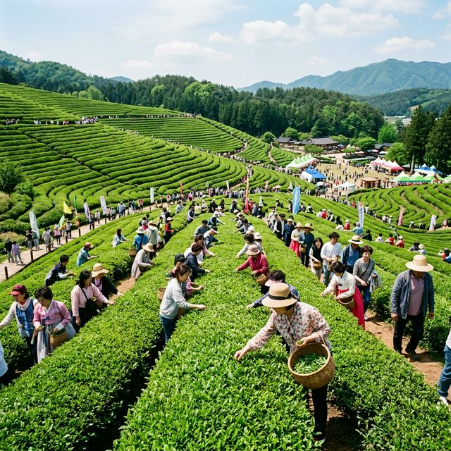
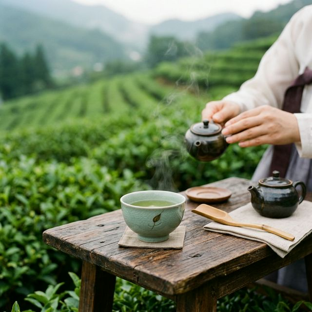
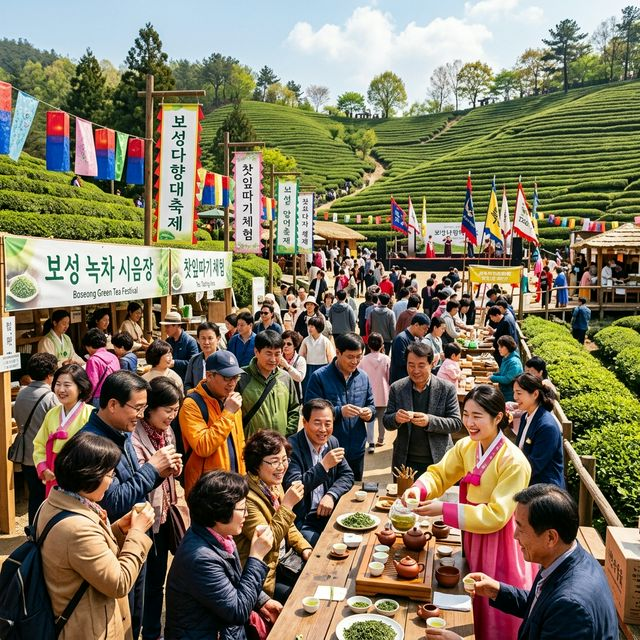

[주요 포인트]
5월의 싱그러움을 만끽할 수 있는 보성 다향대축제가 2026년에도 화려하게 개막합니다. 단순히 찻잎을 따는 행사를 넘어, 천 년의 역사를 지닌 한국 차(茶)의 본고장에서 명인과 소통하며 깊은 차의
세계를 경험해 보세요. 기상 상황에 따른 찻잎 생육 상태와 현장 체험 프로그램 꿀팁까지, 독자 여러분이 헤매지 않도록 완벽 가이드를 제공합니다.
1. 2026 보성 다향대축제 일정 및 기본 정보
싱그러운 5월이 되면 남도의 산자락은 온통 연두빛으로 물듭니다. 올해도 어김없이 보성다향대축제가 열려 많은 상춘객들의 발길을 이끌 예정입니다. 정확한 일정은 5월 초로 계획되어 있으며, 메인 무대와 주요
행사장은 한국차문화공원 일원에서 펼쳐집니다.
올해 축제는 "천 년의 차, 새 천 년의 향기"라는 주제로, 단순히 마시는 차를 넘어 차가 가진 문화적, 역사적 가치를 재조명하는 다채로운 프로그램으로
꽉 채워졌습니다. 입장료는 무료이지만 일부 체험 프로그램의 경우 소정의 재료비가 발생할 수 있습니다.
특히 올해는 이상 기후로 인해 작황이 예년과 다를 수 있다는 우려도 있었으나, 철저한 품질
관리 덕분에 찻잎의 향과 맛이 그 어느 때보다 뛰어나다는 현장의 목소리가 들립니다. 축제 기간 동안 방문하시면 갓 덖어낸 햇차의 진미를 제대로 맛보실 수 있을 것입니다.
2. 찻잎 따기부터 덖기까지: 핵심 체험 가이드
다향대축제의 백미는 역시 직접 찻잎을 따고 덖는 체험입니다. 단순히 차를 마시는 것에서 벗어나, 찻잎이 내 입술에 닿기까지의 전 과정을 손끝으로 느낄 수 있는 귀중한 시간이죠.
넓게 펼쳐진 다원 사이를 거닐며 연둣빛 어린 잎을 똑똑 따는 재미는 힐링 그 자체입니다.
채엽을 마친 후에는 가마솥에서 찻잎을 덖는 체험이 이어집니다. 뜨거운 가마솥에 손이 데지 않도록 조심하며
잎을 뒤적이다 보면, 풋풋했던 찻잎에서 점차 구수한 향기가 피어오르는 마법 같은 순간을 경험하게 됩니다. 덖음 체험은 회차별 인원 제한이 있으므로, 가급적 오전에 방문하여 미리 현장 접수를 해두시는 것이
좋습니다.
완성된 수제 차는 예쁜 포장 용기에 담아 가져갈 수 있어, 소중한 사람에게 선물하기에도 손색이 없습니다. 투박하지만 내 손으로 직접 만든 차 한 잔의 의미는 그 어떤 명차와도 비교할 수
없겠죠.

보성 녹차밭 봄 축제 현장, 햇살이 가득한 다원에서 찻잎을 따는 풍경 / AI 제작 이미지
3. 명인과의 만남: 깊이 있는 다도 체험
이번 축제에서 가장 눈여겨볼 프로그램 중 하나는 바로 명인과의 다담(茶談) 시간입니다. 평소 쉽게 뵙기 힘든 차 명인들을 직접 만나 전통 다도를 배우고, 차에 얽힌 깊이 있는
이야기를 나눌 수 있는 절호의 기회입니다. 바쁜 일상 속에서 잠시 쉼표를 찍고 싶은 분들께 강력히 추천합니다.
단순히 마시는 예절을 넘어서, 물의 온도, 다도구의 선택, 찻물을 따르는 소리 등
오감을 활용하여 차를 온전히 즐기는 법을 명인의 숨결과 함께 배우게 됩니다. 특히 찻자리가 주는 평온함과 묵직한 분위기는 그 자체로 훌륭한 마음 챙김의 시간이 됩니다.
명인 체험 프로그램 역시
사전 예약이 치열하므로, 축제 공식 홈페이지를 통해 미리 일정을 확인하고 발 빠르게 예약하는 것이 성공의 열쇠입니다. 다식과 함께 내어지는 명차의 조화로움에 흠뻑 빠져보시길 바랍니다.
4. 눈과 입이 즐거운 티 페어링 마켓
축제장에 먹거리가 빠지면 섭섭하죠. 이번 2026축제에서는 나날이 진화하는 티 페어링(Tea Pairing) 트렌드를 반영하여 다채로운 마켓이 열립니다. 전통적인 다식은
물론이고, 녹차를 활용한 마카롱, 젤라또, 블렌딩 티 등 젊은 층의 입맛까지 사로잡을 참신한 메뉴들이 대거 선보입니다.
특히 녹차 삼겹살 꼬치나 녹차 냉면처럼 식사 대용으로 든든하게 즐길 수 있는
메뉴들도 준비되어 있어, 하루 종일 축제장에 머물며 입안 가득 보성의 향기를 채울 수 있습니다. 취향에 맞는 차와 디저트의 조합을 찾아보는 재미가 쏠쏠합니다.
현지 전문가들이 개발한 특별한
레시피의 녹차 음료들도 놓쳐서는 안 될 포인트입니다. 달콤쌉싸름한 녹차의 매력이 다채로운 디저트와 만나 어떻게 극대화되는지, 그 환상적인 마리아주를 꼭 경험해 보세요.

고요한 녹차밭을 배경으로 한옥 찻상 위에 놓인 다도구와 김이 모락모락 나는 찻잔 / AI 제작 이미지
5. 주차장 현황 및 교통 접근성 분석
인기 축제인 만큼 매년 주차 대란이 벌어지곤 합니다. 올해는 이러한 불편을 해소하기 위해 임시 주차장을 확충하고 셔틀버스 운행 시스템을 전면 개편했습니다. 자차로 이동하시는 분들은 메인 행사장과 조금 떨어진
제2, 제3 임시주차장을 우선적으로 공략하시는 것이 시간 절약의 핵심입니다.
특히 주말이나 공휴일 오전 10시 이후로는 행사장 진입로 자체가 극심한 정체를 빚기
십상입니다. 가급적 오전 9시 이전에 도착하여 여유 있게 주차를 마치고 축제를 즐기거나, 오후 3시 이후에 방문해 해 질 녘 녹차밭의 운치를 만끽하는 것도 스마트한 전략입니다.
대중교통을
이용하시는 분들을 위해 보성역 및 버스터미널에서 행사장까지 직행하는 셔틀버스가 촘촘하게 운행됩니다. 기차나 버스의 도착 시간에 맞춰 셔틀버스 시간표가 짜여 있으니, 미리 확인해두시면 쾌적한 여행이 될
것입니다.
6. 옷차림 및 준비물 필수 체크
보성의 5월은 햇살이 제법 따갑습니다. 산비탈에 위치한 다원의 특성상 그늘이 많지 않으므로, 자외선 차단 대비가 최우선입니다. 챙이 넓은 모자, 자외선 차단제, 그리고 얇은
긴소매 겉옷을 준비하시면 변덕스러운 봄 날씨에 현명하게 대처할 수 있습니다.
또한 행사장 곳곳을 누비며 찻잎을 따고 이동하려면 발이 편해야 합니다. 굽이 있는 신발보다는 접지력이 좋은 가벼운
운동화나 트레킹화 착용을 권장합니다. 다원의 흙길을 걸어야 하니 흰색 신발은 피하는 것이 정신 건강에 이롭습니다.
야외 체험이 길어지면 수분 보충이 필수적입니다. 물론 현장에서 맛있는 차를 실컷
마실 수 있지만, 생수를 담은 작은 텀블러 하나쯤은 가방에 챙겨 다니시는 것이 좋습니다. 땀을 닦을 손수건도 잊지 마세요.

청명한 봄 날씨 속 다향대축제 현장, 보성의 찻자리를 즐기는 사람들 / AI 제작 이미지
7. 녹차밭 인생샷 명당 베스트 3
보성 녹차밭은 그 자체로 훌륭한 스튜디오입니다. 첫 번째 추천 명소는 중앙 전망대로 오르는 삼나무 길입니다. 하늘을 찌를 듯 솟아오른 웅장한 삼나무와 그 사이로 부서지는 아침
햇살은 역광을 활용한 몽환적인 컷을 연출하기에 최고입니다.
두 번째 명당은 계단식 다원이 파노라마처럼 펼쳐지는 차밭 정상입니다. 약간의 발품을 팔아 올라가면,
굽이치는 초록 물결과 저 멀리 굽어보이는 마을의 평화로운 풍경을 한 프레임에 담을 수 있습니다. 광각 렌즈를 활용하면 가슴 탁 트이는 시원한 구도가 완성됩니다.
마지막으로 다원 한가운데 자리 잡은
포토존 정자를 추천합니다. 정자 모서리에 살짝 걸터앉아 다원을 배경으로 인물 사진을 찍으면, 특유의 고즈넉함과 전통미가 물씬 풍깁니다. 이른 아침 안개가 살짝 끼었을 때는
신비로움까지 더해집니다.
8. 주변 연계 관광 코스: 율포해변 드라이브
다향대축제를 한껏 즐기셨다면, 차로 15분 거리에 있는 율포해수욕장으로 발걸음을 옮겨 투어를 완성해 보세요. 푸른 차밭에서 눈을 정화했다면, 이제는 은빛 모래사장과 함께 바다의
낭만을 만끽할 차례입니다. 솔밭길을 따라 걷다 보면 산과 바다가 주는 다채로운 감동을 한 번에 느낄 수 있습니다.
율포해변은 전국적으로도 손꼽히는 낙조 명소입니다. 오후 늦게 방문하여 붉게 물드는
바다를 바라보며 하루를 마무리하는 일정은 그야말로 완벽합니다. 해변을 따라 조성된 송림 산책로는 가족이나 연인과 도란도란 이야기 나누며 걷기에 안성맞춤입니다.
또한 이곳에는 전국 유일의
해수녹차센터가 위치해 있어, 지친 몸을 따뜻한 녹차탕에 담그고 피로를 풀기에 제격입니다. 축제장에서 흙먼지를 묻혀가며 열심히 즐긴 몸을 개운하게 씻어내며 보성 여행의 방점을 찍어보시길 바랍니다.
9. 2026축제 방문 총평 및 팁
2026년 보성 다향대축제는 과거의 천년 역사를 간직하면서도, 새로운 세대의 트렌드를 훌륭하게 접목한 수작이라고 평가할 수 있습니다. 전통과 현대가 가장 아름답게 어우러지는
현장을 직접 목격하며, 차 한 잔이 지니는 묵직한 가치를 재확인할 수 있습니다.
다만 현장의 생생한 분위기를 제대로 맛보기 위해서는 무엇보다 치밀한 사전 계획이 필수입니다.
특히 인기 체험 프로그램과 숙박 시설은 순식간에 매진될 수 있으므로, 최소 방문 2~3주 전부터 예약을 서두르셔야 낭패를 보지 않습니다.
올해 남도 여행을 계획 중이시라면 주저 없이 보성의 초록
물결 속으로 몸을 던져보세요. 코끝을 스치는 쌉싸름한 녹차 향기와 명인들의 지혜, 그리고 따스한 봄햇살이 어우러져 평생 잊지 못할 5월의 추억을 완성해 줄 것입니다.